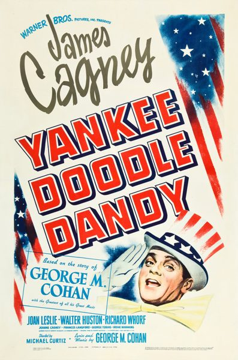

Yankee Doodle Dandy
Starring: James Cagney, Joan Leslie, Walter Huston
Director: Michael Curtiz
Writer: Robert Buckner, Julius J. Epstein, Philip G. Epstein
Producer: Hal B. Wallis, Jack Warner
Studio: Warner Bros. Entertainment
Yankee Doodle Dandy is a 1942 American biographical musical drama film about George M. Cohan. It stars James Cagney, Joan Leslie, Walter Huston, and Richard Whorf, and features Irene Manning, George Tobias, Rosemary DeCamp, Jeanne Cagney, and Vera Lewis. Joan Leslie's singing voice was partially dubbed by Sally Sweetland. The film was written by Robert Buckner and Edmund Joseph, and directed by Michael Curtiz.
Trivia
- Won the Academy Award for Best Actor.
- Won the Academy Award for Best Original Musical Score.
- Won the Academy Award for Best Sound.
- Also nominated for: Academy Award for Best Supporting Actor; Academy Award for Best Director; Academy Award for Best Story; Academy Award for Best Film Editing; and 1 more.
- Cagney, like Cohan, was an Irish-American who had been a song-and-dance man early in his career.
- Newspapers at the time reported that Cagney intended to consciously imitate Cohan's song-and-dance style, but to play the normal part of the acting in his own style.
- Cagney and other players came up with a number of "bits of business", as Cagney called them, meaning improvised lines or action in theater parlance.
Previous Showings
13 Runs • 8 Festivals
14,317 tickets sold
Original Billings: 1 run (March 1, 1943)
Original Run: March 1, 1943 (Sunday - Thursday)
All runs on record (13):
- March 1, 1943 (Sunday - Thursday)James Cagney, Joan Leslie
- July 4 - 9, 1991 · 2,383 ticketsw/ The Stars and Stripes Forever
- July 3 - 5, 1992 · 1,780 ticketsw/ This Is the Army
- July 3 - 6, 1993 · 1,221 ticketsw/ Mr. Smith Goes to Washington
- July 5 - 8, 1997 · 1,057 ticketsw/ Footlight Parade
- November 27 - 30, 1999 · 866 ticketsHoliday 1999w/ Footlight Parade
- June 10 - 16, 2000 · 1,989 ticketsSummer 2000w/ Casablanca
- May 6 - 7, 2001 · 227 ticketsMORE HOLLYWOOD MUSICALS 1940-1950w/ Babes in Arms
- April 21 - 22, 2007 · 1,013 ticketsFilm Noir, Val Lewton, 1930s musicals and more!w/ The Devil and Daniel Webster
- July 3 - 6, 2009 · 1,433 ticketsSummer 2009w/ Footlight Parade
- November 22 - 23, 2009 · 410 tickets20th Anniversary Festivalw/ Swing Time
- July 2 - 4, 2011 · 1,156 ticketsMusicalsw/ Footlight Parade
- August 5 - 7, 2017 · 782 ticketsWarner Brosw/ A Midsummer Night's Dream